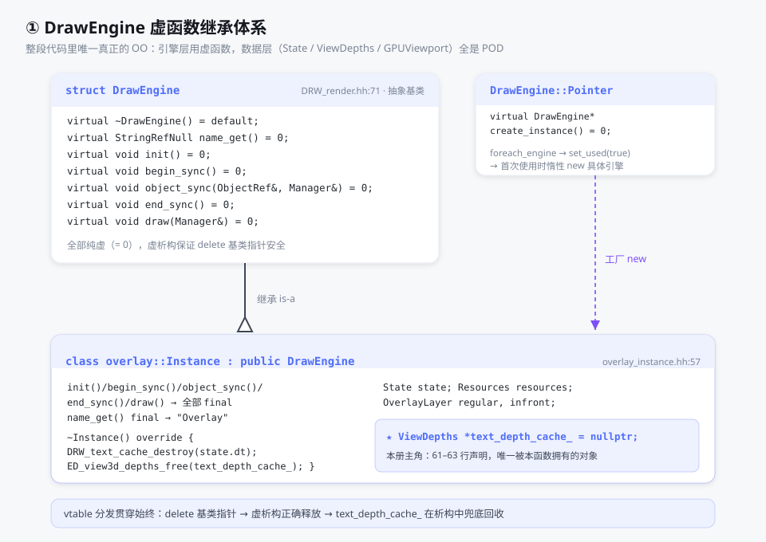
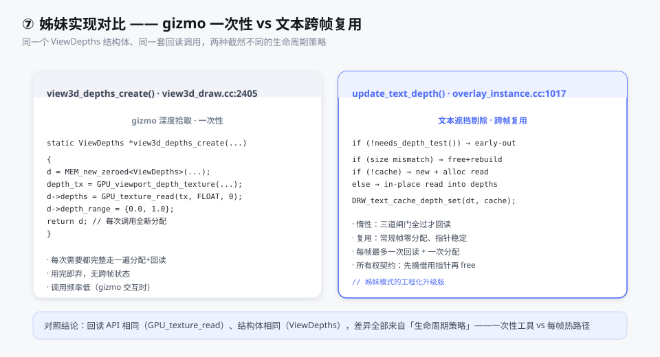
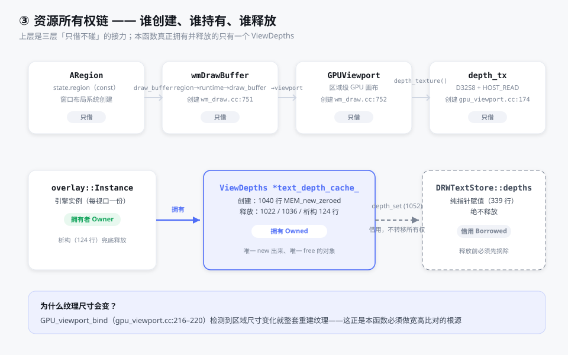
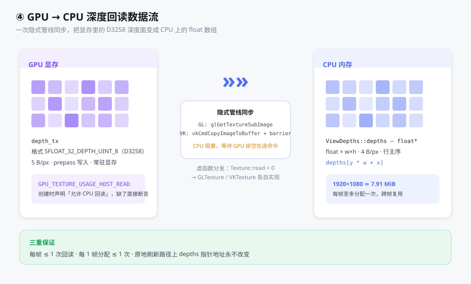
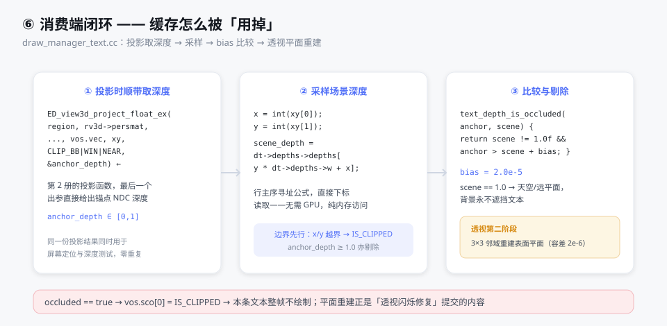
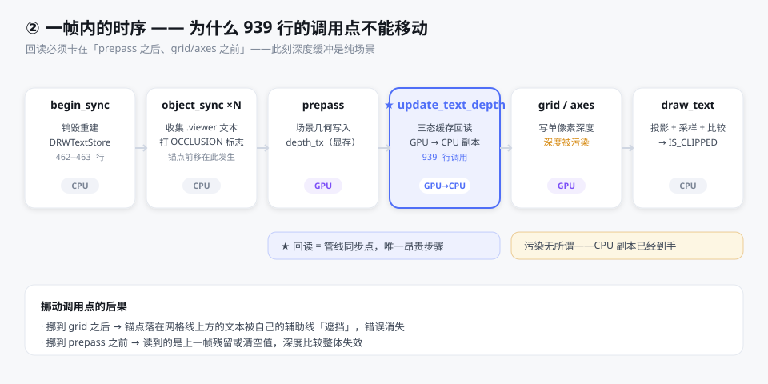
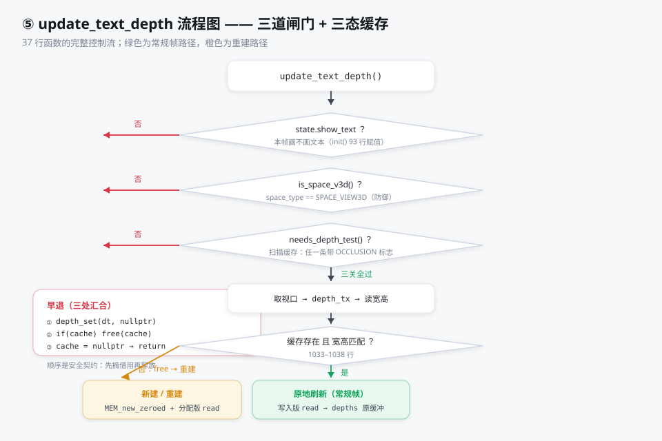
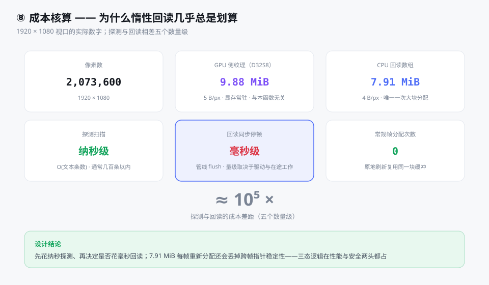

01宏观：谁在调用它 —— DrawEngine 继承体系
这个函数是成员函数，宿主类是 blender::draw::overlay::Instance。
它不是孤立的类，而是插件式渲染引擎架构中的一个节点。
整段代码里唯一真正的面向对象在引擎层——
数据层（State、ViewDepths、GPUViewport、wmDrawBuffer）
全部是无虚函数的 POD 结构体。

1.1 虚函数与工厂 DRW_render.hh:71–133
struct DrawEngine {
virtual ~DrawEngine() = default; /* 虚析构！ */
virtual StringRefNull name_get() = 0; /* 纯虚 */
virtual void init() = 0; /* 每帧最先跑 */
virtual void begin_sync() = 0; /* 场景同步 */
virtual void object_sync(draw::ObjectRef &, draw::Manager &) = 0;
virtual void end_sync() = 0;
virtual void draw(draw::Manager &) = 0; /* 提交命令 */
};
七个纯虚函数构成引擎生命周期模板。Pointer 嵌套结构（104–132 行）是工厂：
持有基类指针 DrawEngine *instance，set_used(true) 时若为空就调
第二个纯虚函数 create_instance() 创建具体引擎——
draw_view_data.cc 的 foreach_engine 遍历所有注册引擎完成这个分发。
虚析构是整个资源契约的基石
Pointer::free_instance() 执行 delete instance——基类指针删除派生类对象。
正因为 DrawEngine 声明了虚析构（78 行），这次 delete 才能正确调到
overlay::Instance::~Instance()（overlay_instance.hh:120–126），
后者释放 text_depth_cache_——本函数管理的内存的最终兜底。
1.2 text_depth_cache_ 的归属 overlay_instance.hh:61–63
/** Scene depth for text occlusion, refreshed after the prepass and before grid drawing.
* Reuse the allocation until the viewport resizes or depth testing is disabled. */
ViewDepths *text_depth_cache_ = nullptr;
注释直接概括了第 3 册的全部设计：prepass 后刷新、grid 前完成、复用分配直到视口缩放或关闭剔除。
它在 private 段——只有本函数和析构函数有资格碰它。
02state 三个字段的溯源
State（overlay_private.hh:128–237）是 POD 聚合体，每帧由 Instance::init() 填充。
三个早退条件涉及的字段各有明确来源：
2.1 show_text 在哪赋值 overlay_instance.cc:49 · 93–94 · 119
state.show_text = false; /* 49 行：先重置 */
/* 93–94 行：V3D 分支，三条件取与 */
state.show_text = !resources.is_selection() && !state.is_depth_only_drawing &&
(ctx->v3d->overlay.flag & V3D_OVERLAY_HIDE_TEXT) == 0;
/* 119 行：图像编辑器分支 */
state.show_text = !state.hide_overlays;三个来源：选择模式不显示、深度拾取绘制不显示、用户勾选「隐藏文本」不显示。 它是「本帧画不画文本」的权威值。
2.2 is_space_v3d() 与防御 overlay_private.hh:218–221
bool is_space_v3d() const { return this->space_type == SPACE_VIEW3D; }
/* space_type 的赋值（overlay_instance.cc:56） */
state.space_type = state.v3d != nullptr ? SPACE_VIEW3D
: eSpace_Type(ctx->space_data->spacetype);
为什么覆盖层引擎还可能在非 V3D 空间运行？因为图像编辑器也复用这个引擎
（111–129 行有完整的 is_space_image 分支）。图像空间没有
RegionView3D，深度语义完全不同，所以这一条是必要防御而非多余。
2.3 dt：每帧销毁重建 overlay_instance.cc:462–463
DRW_text_cache_destroy(state.dt);
state.dt = DRW_text_cache_create(); /* MEM_new<DRWTextStore> */
DRWTextStore（draw_manager_text.cc:68–77）三个字段：
Vector<ViewCachedString> cache_strings（本帧全部文本）、
LinearAllocator<> string_allocator（字符串后备存储）、
const ViewDepths *depths（借用指针，1052 行的交接目标）。
时序保证探测准确
begin_sync 在前、object_sync 填充 cache_strings 在中、本函数在 draw() 里最后跑——
所以 DRW_text_cache_needs_depth_test() 扫描时看到的是完整的本帧文本列表。
03三条件早退逐行 1019–1026
if (!state.show_text || !state.is_space_v3d() || !DRW_text_cache_needs_depth_test(state.dt)) {
DRW_text_cache_depth_set(state.dt, nullptr); /* ① 先摘借用指针 */
if (text_depth_cache_ != nullptr) {
ED_view3d_depths_free(text_depth_cache_); /* ② 再释放自有对象 */
text_depth_cache_ = nullptr; /* ③ 置空自有指针 */
}
return;
}||短路求值：两个 bool 最便宜放前面，O(n) 缓存扫描放最后——前两关不过就不付扫描成本。- 探测函数（draw_manager_text.cc:342–350）：遍历
cache_strings， 任一条flag & DRW_TEXT_CACHE_OCCLUSION_CULLING（1 << 4）即真。 这个标志只被overlay_attribute_text.hh的text_flag_打上—— 只有 .viewer 属性文本申请遮挡剔除，普通物体名标签不申请。 - 早退顺序是安全契约：先置空
dt->depths再free。 反序且本帧仍有带标志文本时，消费端dt->depths->depths[...]就是 use-after-free。
04ViewDepths 与姊妹实现
struct ViewDepths {
unsigned short w, h; /* 数组尺寸 */
short x, y; /* 子矩形偏移，本场景恒 0 */
float *depths; /* CPU 深度数组，行主序 */
double depth_range[2]; /* 值域声明 [0,1] */
};
它不是为本功能发明的。同一个结构体早已服务 gizmo 深度拾取——
view3d_draw.cc:2405 有几乎一模一样的 view3d_depths_create()：
同样的 MEM_new_zeroed<ViewDepths>、同样的取纹理、同样的
GPU_texture_read(depth_tx, GPU_DATA_FLOAT, 0)。
本函数是它的跨帧复用改造版：增加尺寸检测与原地刷新，其余一致。

MEM_new_zeroed<T>（MEM_guardedalloc.h:550–559）能用于 ViewDepths
是因为它全 POD；模板内的 static_assert(std::is_trivial_v<T>) 会拒绝任何带
构造/析构的类型。释放端 ED_view3d_depths_free（view3d_draw.cc:2551–2557）两步走：
先 MEM_delete(depths->depths) 再 MEM_delete(depths)，与本函数的分配严格配对。
05资源所有权链全景
1029 行 WM_draw_region_get_viewport(const_cast<ARegion *>(state.region))
背后是三层嵌套的借用接力——本函数对前三层只读不碰，唯一拥有的是最后一层。

5.1 创建链三层借用
| 对象 | 类型 | 创建于 | 本函数的角色 |
|---|---|---|---|
region->runtime->draw_buffer | wmDrawBuffer * | wm_draw.cc:751 | 只借。区域首次绘制时 MEM_new_zeroed 创建，752–753 行同时 GPU_viewport_create() |
viewport | GPUViewport * | gpu_viewport.cc:111 | 只借。区域级 GPU 画布，持全部颜色/深度纹理与帧缓冲 |
depth_tx | gpu::Texture * | gpu_viewport.cc:174 | 只借其内容。D32S8 格式，GPU_viewport_bind 检测尺寸变化就整套重建（216–220 行） |
text_depth_cache_ | ViewDepths * | 本函数 1040 | 唯一拥有：三处 free + 析构兜底 |
dt->depths | const ViewDepths * | 纯指针赋值 | 借用：不释放，依赖拥有者先摘除 |
尺寸比对（1033–1038 行）的根源在下游
GPU_viewport_bind 每次绑定都比较 rect_size 与 viewport->size，
不同则 gpu_viewport_textures_free + create 重建整套纹理（gpu_viewport.cc:216–220）。
用户拉伸窗口就会走到这里——若 CPU 缓存还是旧尺寸继续写入就越界。
5.2 深度纹理的诞生 gpu_viewport.cc:174–186
viewport->depth_tx = GPU_texture_create_2d("dtxl_depth",
UNPACK2(size), 1,
gpu::TextureFormat::SFLOAT_32_DEPTH_UINT_8,
usage | GPU_TEXTURE_USAGE_HOST_READ |
GPU_TEXTURE_USAGE_FORMAT_VIEW,
nullptr);SFLOAT_32_DEPTH_UINT_8= D32S8：32 位浮点深度 + 8 位模板。 浮点深度是 Blender 近平面极高精度的关键（第 1 册 §6）。GPU_TEXTURE_USAGE_HOST_READ（GPU_texture.hh:770，第 4 位）： 显式声明「CPU 要回读」。Vulkan/Metal 的 usage 必须创建时声明，后端据此选择可回读内存布局。 缺了这个标志调GPU_texture_read直接断言失败（gpu_texture.cc:557–560）。FORMAT_VIEW：允许格式视图——Workbench 体积渲染要读 stencil 视面。
06gpu::Texture 多态分发 —— 本函数触发的唯一真 OO
GPU_texture_read 最深处藏着整段代码唯一的运行期多态：
class Texture {
protected:
int w_, h_, d_; /* 尺寸 */
TextureFormat format_; /* 内部格式 */
eGPUTextureUsage gpu_image_usage_flags_; /* HOST_READ 存这里 */
Texture *source_texture_ = nullptr; /* 纹理视图源 */
public:
virtual ~Texture(); /* 虚析构 */
virtual void read(int mip, eGPUDataFormat format, void *dst) = 0; /* ← 纯虚 */
int width_get() const { return w_; } /* 非虚内联 */
};6.1 GL 后端 read() gl_texture.cc:483–526
void GLTexture::read(int mip, eGPUDataFormat type, void *data)
{
/* 深度+模板纹理读回时剥离 stencil */
GLenum gl_format = to_gl_data_format(
format_ == TextureFormat::SFLOAT_32_DEPTH_UINT_8
? TextureFormat::SFLOAT_32_DEPTH : format_);
const int3 extent = mip_size_get(mip);
if (is_texture_view() && format_get() == source_texture_->format_get()) {
glGetTextureSubImage(static_cast<GLTexture *>(source_texture_)->tex_id_, ...);
} else {
glGetTextureSubImage(tex_id_, mip, 0,0,0, extent.x, extent.y, extent.z,
gl_format, gl_type, texture_size, data);
}
}
glGetTextureSubImage 是隐式同步点：CPU 阻塞直到 GPU 完成所有影响该纹理的命令
（管线排空 / fence）。这就是「回读是管线停顿源」的底层机制。
纹理视图分支规避了 OpenGL 驱动对视图尺寸处理不佳的问题。
6.2 Vulkan 后端 read() vk_texture.cc:336–361 → read_sub:204
Vulkan 没有直接「读纹理」，要四步：
分配 staging 传输缓冲 → vkCmdCopyImageToBuffer → 带内存屏障等传输完成 → CPU 侧格式转换。
read_sub 还处理超大纹理分块（#144887：NVIDIA 传输缓冲上限 2GB），
超过就按层 / 按深度 / 按行拆分多个 transfer region 逐段搬。
6.3 双重载与 HOST_READ gpu_texture.cc:538–562
void *GPU_texture_read(Texture *texture, eGPUDataFormat fmt, int mip)
{
size_t size = texture->read_size_get(mip, fmt); /* w*h*4 字节 */
if (texture->type_get() == GPU_TEXTURE_CUBE_ARRAY) size += 8; /* AMD bug #66573 */
void *data = MEM_new_uninitialized(size, __func__);
GPU_texture_read(texture, fmt, mip, data); /* 转调写入版 */
return data;
}
void GPU_texture_read(Texture *texture, eGPUDataFormat fmt, int mip, void *dst)
{
BLI_assert_msg(GPU_texture_usage(texture) & GPU_TEXTURE_USAGE_HOST_READ, "...");
texture->read(mip, fmt, dst); /* ← 虚函数分发 */
}
两个重载的真正差别只在内存归谁管。本函数的妙处：
首帧用分配版让 depths 拿到堆内存，之后每帧用写入版原地覆盖——
depths 指针值永不改变。数据布局结论：
w×h 个 IEEE-754 float，行主序，每个是 NDC 深度 ∈ [0,1]。

07消费端闭环 —— 缓存怎么被「用掉」
1052 行交出指针后，同帧稍后 draw_text()（1009 行）→
DRW_text_cache_draw()（draw_manager_text.cc:244）。三步消费：
/* ① 投影时顺带取锚点深度（第 2 册的函数，最后出参） */
ED_view3d_project_float_ex(region, rv3d->persmat, ..., &anchor_depth)
/* ② 采样场景深度：行主序寻址 */
const float scene_depth = dt->depths->depths[y * dt->depths->w + x];
/* ③ bias 比较，bias = 2.0e-5f */
static bool text_depth_is_occluded(float anchor_depth, float scene_depth)
{
return scene_depth != 1.0f && anchor_depth > scene_depth + text_depth_bias;
}
scene_depth == 1.0f 是远平面/天空特判——背景永不遮挡文本。
透视视图还有第二阶段 text_anchor_is_occluded_perspective（194–242 行）：
用 3×3 邻域深度样本重建锚点亚像素位置的局部表面平面（平面性容差 2e-6），
消除逐像素深度采样导致的标签闪烁——正是本系列对话里「透视闪烁修复」提交的内容。

08GPU / CPU 基础知识
| 概念 | 在本函数中的体现 |
|---|---|
| 深度缓冲 Depth Buffer | 每像素一个深度值的离屏纹理；prepass 由场景几何写入；depth_tx 就是它 |
| NDC 深度 [0,1] | 透视除法后的深度；0 = 近平面，1 = 远平面；回读数组里存的就是它 |
| D32S8 复合格式 | 32 位浮点深度 + 8 位模板打包 5 字节/纹素；读回只取深度面 → 4 字节/像素 |
| CPU–GPU 异步 | CPU 提交命令、GPU 异步执行，平时互不等待 → 吞吐高 |
| 回读同步代价 | glGetTextureSubImage / vkCmdCopyImageToBuffer 必须等 GPU 排空 → 管线停顿，惰性回读的动机 |
| Usage 标志 | Vulkan/Metal 要求创建时声明用途；HOST_READ 启用 CPU 可读内存布局，并禁用某些压缩 |
| 行主序 Row-major | depths[y * w + x] 的寻址公式；一行连续，行间跳 w 个 float |
| POD / Trivial | 只有平凡类型能用 MEM_new_zeroed；ViewDepths / State / GPUViewport 全满足 |
09一帧全景时序
把宏观与微观串成一条生命线：



一句话总结
微观：37 行函数 = 三道惰性闸门 + 三态缓存复用 + 一次借用交接，
每个分支都在维护「拥有者先摘指针、再释放」的所有权契约。
宏观：它站在 DrawEngine 虚函数工厂之上、
gpu::Texture 虚函数分发之下，中间穿过的每一层
（wmDrawBuffer → GPUViewport → depth_tx → ViewDepths → DRWTextStore::depths）
全是「借用不拥有」的指针接力——真正 new 出来被本函数拥有和释放的，
自始至终只有一个 POD 的 ViewDepths 和它背后 7.91 MiB 的 float 数组。
10图解索引
| 图 | 文件 | 内容 |
|---|---|---|
| 图 1 | 04-图解/01-DrawEngine继承体系.svg | 抽象基类七个纯虚、虚析构、工厂惰性创建、overlay::Instance 的 final 方法与成员 |
| 图 2 | 04-图解/02-帧内时序.svg | 一帧六阶段，回读时点为何不能移动，挪动的两种后果 |
| 图 3 | 04-图解/03-资源所有权链.svg | 三层借用接力 + 拥有/借用分界 + 尺寸重建根源 |
| 图 4 | 04-图解/04-GPU回读数据流.svg | 显存 D32S8 → 管线同步 → CPU float 数组，布局与三重保证 |
| 图 5 | 04-图解/05-流程图.svg | 三闸门 + 三态 + 早退完整控制流 |
| 图 6 | 04-图解/06-消费端闭环.svg | 投影取深度 → 采样 → bias 比较 → 平面重建 → 剔除 |
| 图 7 | 04-图解/07-姊妹实现对比.svg | gizmo 一次性 vs 文本跨帧复用，同一 API 两种策略 |
| 图 8 | 04-图解/08-成本核算.svg | 像素数 / 显存 / CPU 数组 / 探测 / 停顿 / 分配六个数字 |